dit_v4 — 5 training-step samples
step 1

step 2500

step 5000

step 7500
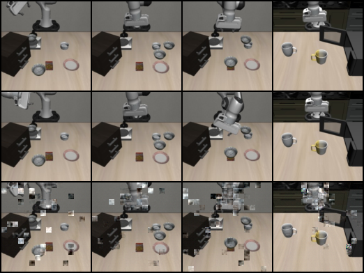
step 10000

Predicted next-frames from the four DiT variants over training. Within each PNG: top row = real frames, bottom row = the DiT's predictions for the same step. Predictions sharpen as training progresses, but the action-conditioning ablation showed all four variants ignore the action input.
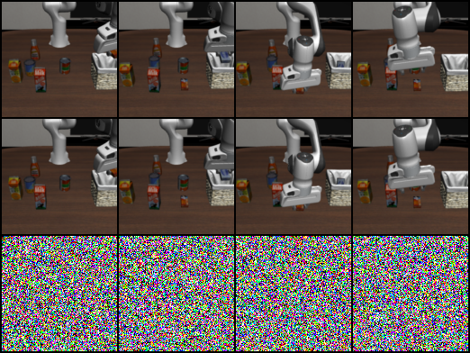
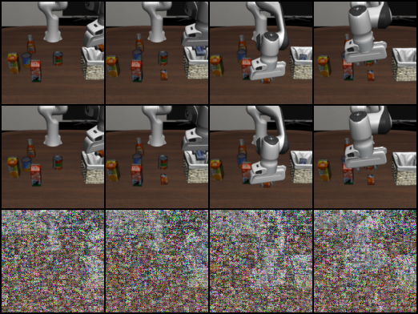
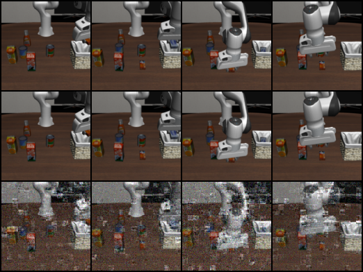
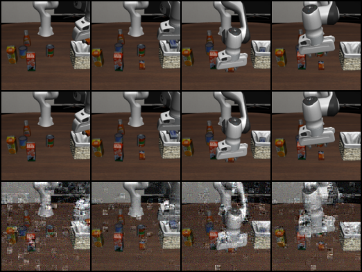
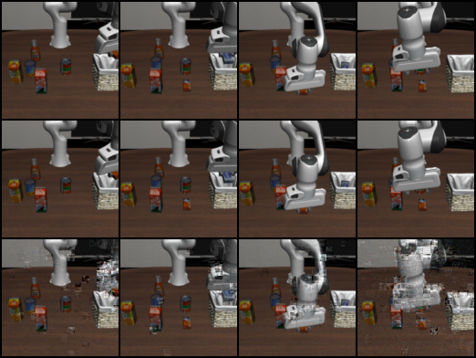
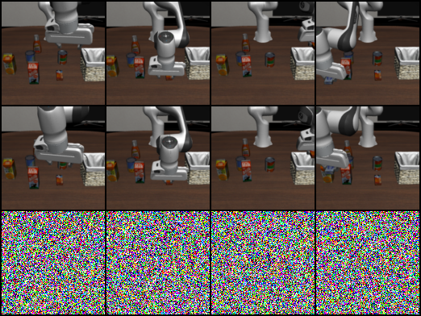
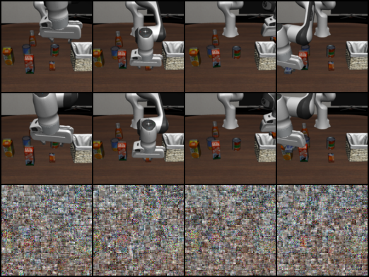
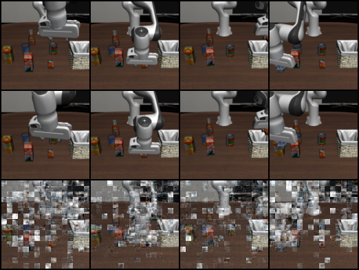
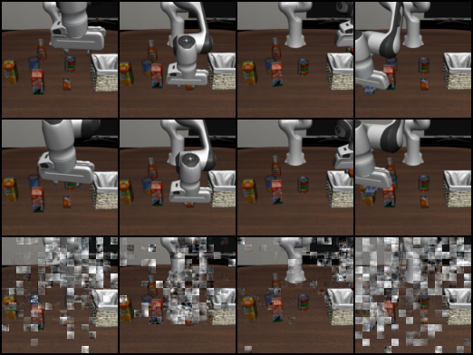
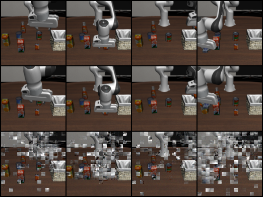
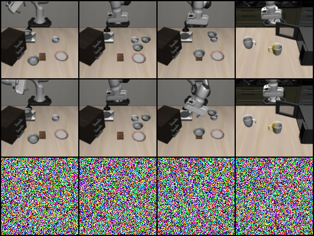
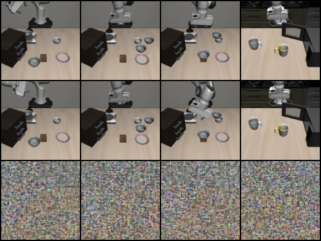
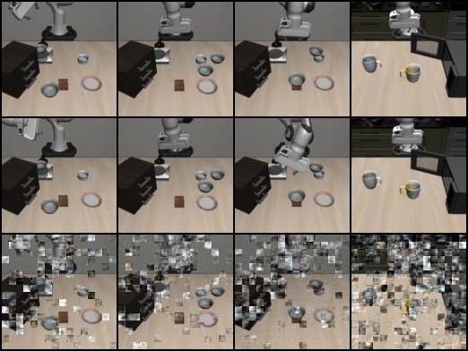
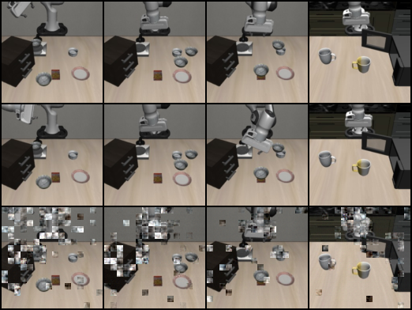
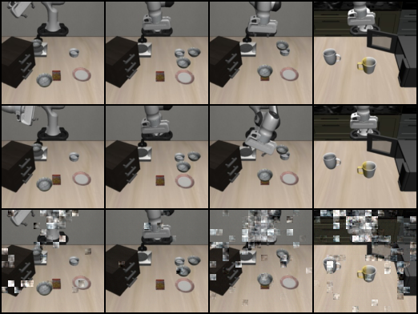
